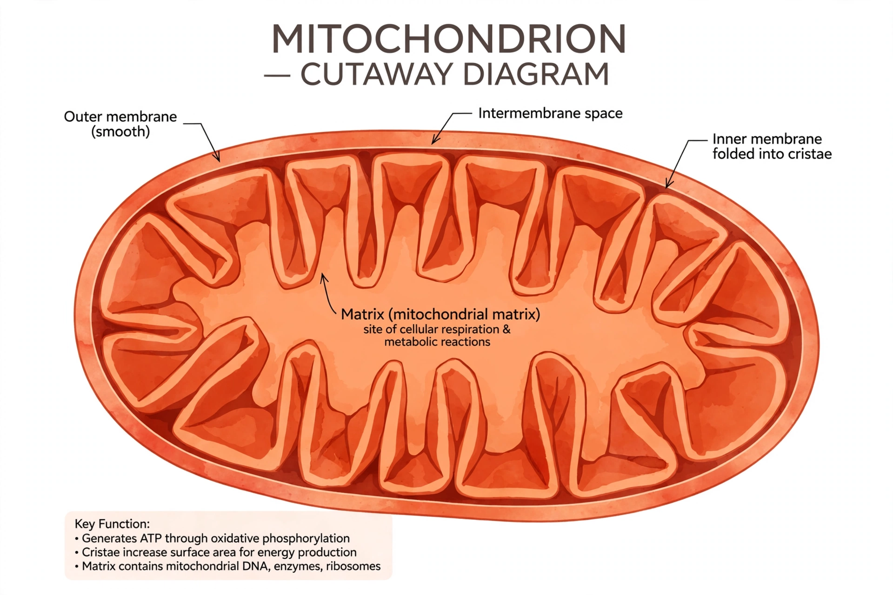

Mitochondrion

[Image: a cutaway diagram of a mitochondrion showing the folded inner membrane (cristae), matrix and outer membrane]A mitochondrion (plural mitochondria) is a double-membraned organelle found in most eukaryotic cells, whose main function is to generate most of the cell's supply of adenosine triphosphate (ATP), the energy currency used to power biochemical reactions. Mitochondria are often described as the "powerhouse of the cell", a phrase popularised by a 1957 Scientific American article by Philip Siekevitz.
Mitochondria have their own small circular DNA genome and their own ribosomes, strong evidence that they descend from free-living bacteria captured by an ancestral cell — an endosymbiosis proposed by Lynn Margulis in 1967. Cells contain from one to thousands of mitochondria; human mitochondrial DNA (37 genes) is inherited almost entirely from the mother.
Structure and function
The inner membrane is folded into cristae packed with the electron transport chain and ATP synthase. In cellular respiration, energy from food molecules drives protons across this membrane, and their flow back powers ATP production. Mitochondria also help regulate cell death (apoptosis), calcium storage and heat production.
Disease
Mitochondrial mutations cause a group of disorders — including Leigh syndrome and MELAS — that hit energy-hungry tissues such as brain and muscle hardest. Because mitochondrial DNA mutates faster than nuclear DNA and is maternally inherited, it is widely used to trace lineages and human migration.